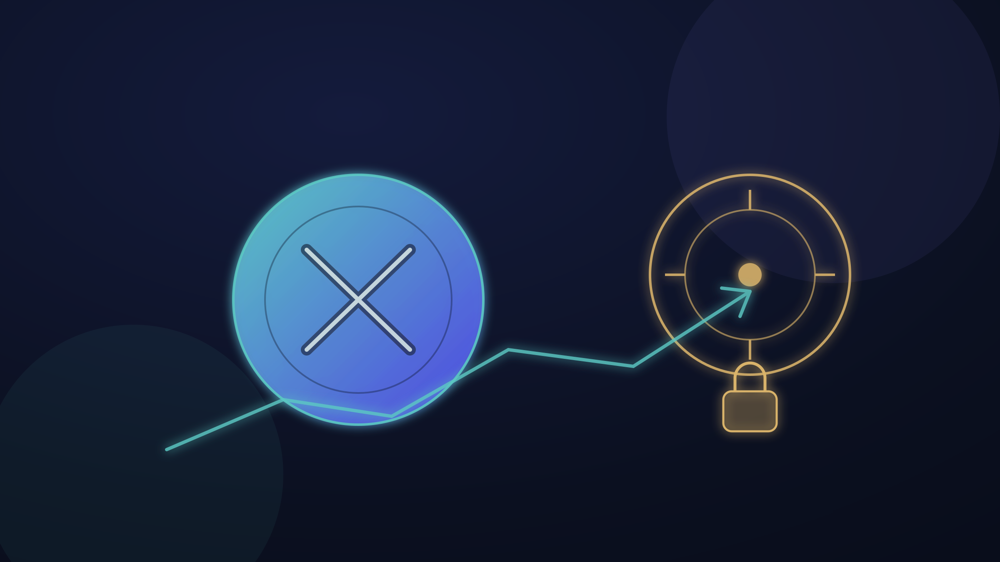
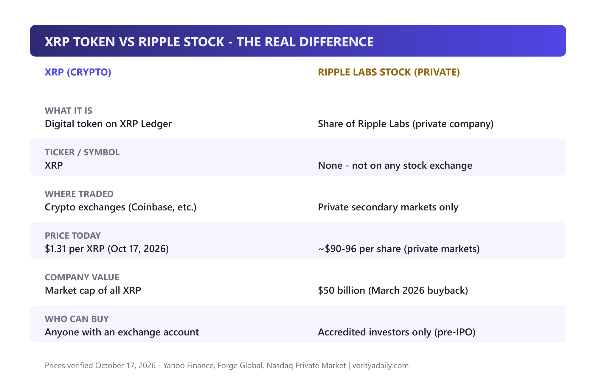
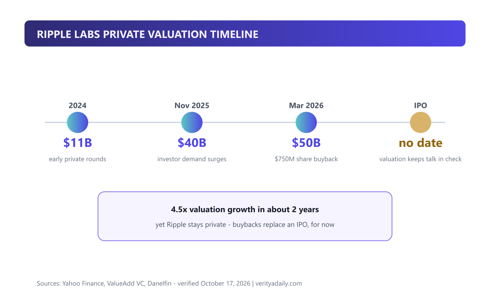
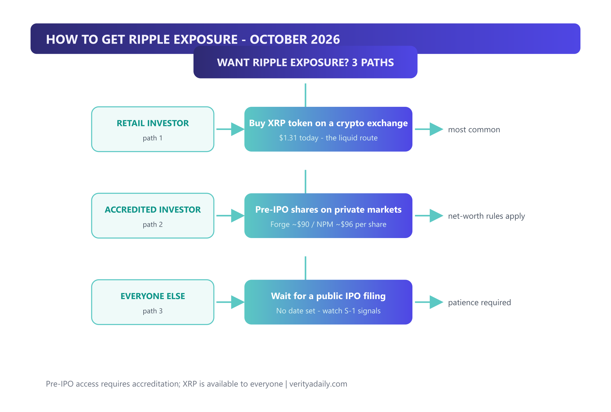
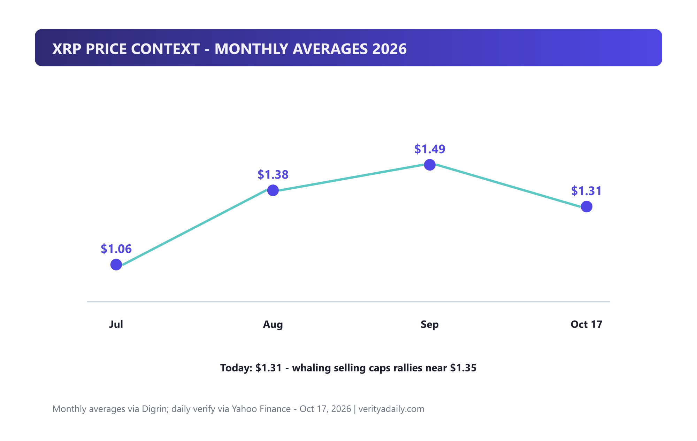

Ripple Cryptocurrency Stock: Can You Buy It? (2026)

You cannot buy Ripple stock on any stock exchange - Ripple Labs is a private company valued at $50 billion, and its shares trade only on private markets at roughly $90-96 each, restricted to accredited investors. What most people actually buy is XRP, the cryptocurrency Ripple's network uses, which trades around $1.31 as of October 17, 2026. Here's the full picture: what the difference really is, what the company is worth, how to get exposure through three paths, and what would signal an actual IPO.
Quick answer
Ripple Labs stock: not publicly traded. Private valuation: $50 billion (March 2026 buyback). Pre-IPO shares: ~$90 (Forge) / ~$96 (Nasdaq Private Market), accredited investors only. XRP token: $1.31 (Oct 17, 2026), buyable by anyone on crypto exchanges. IPO: no date announced - a $750M buyback keeps IPO talk in check.
In this guide
Key takeaways
- Ripple Labs = private company, $50B valuation - no stock ticker exists on any public exchange.
- XRP = the tradable asset at $1.31 (Oct 17, 2026) - down roughly 70% from its 2025 high.
- Pre-IPO shares trade privately near $90-96, but accreditation rules lock out most retail investors.
- IPO has no date - Ripple's $750M buyback (March 2026) suggests the company doesn't need public money yet.
- Institutional tailwinds are real: Evernorth's 473M XRP treasury, RLUSD stablecoin growth, Wall Street plumbing deals.
XRP vs Ripple stock: the real difference
Search data shows the confusion is massive: people type "ripple cryptocurrency stock" and land on XRP price pages, because Google itself blends the two. They are different assets entirely:

| Feature | XRP (crypto) | Ripple Labs stock (private) |
|---|---|---|
| What it is | Digital token on XRP Ledger | Share of Ripple Labs, a private company |
| Ticker / symbol | XRP | None - not on any stock exchange |
| Where traded | Crypto exchanges (Coinbase, etc.) | Private secondary markets only |
| Price today | $1.31 per XRP (Oct 17, 2026) | ~$90-96 per share (private markets) |
| Company value | Market cap of all XRP in circulation | $50 billion (March 2026 buyback) |
| Who can buy | Anyone with an exchange account | Accredited investors only (pre-IPO) |
The nuance most articles skip: owning XRP is not owning Ripple. Ripple holds a large XRP treasury and builds on the ledger, so the two are linked - but when Ripple's business grows, your XRP benefits only indirectly, through network adoption and escrow management. A true Ripple stockholder would own a slice of the company itself.
Ripple's $50B valuation timeline

Ripple's private valuation tells the IPO story in reverse. The company was valued around $11 billion in its earlier private rounds, jumped to $40 billion by late 2025 as investor demand surged post-SEC-case, and hit $50 billion in March 2026 through a $750 million employee share buyback - Yahoo Finance reports the buyback "pegs its private-market valuation at $50 billion" and keeps IPO talk in check.
Read that again: a company buying back its own shares is signaling it doesn't need an IPO. Buybacks let early employees and investors cash out without listing. That's why no S-1 filing exists despite the $50B mark.
3 ways to get Ripple exposure

Path 1 - Retail (most common): buy XRP. Any major exchange lists it at $1.31 today. You get price exposure to the token ecosystem - and our where to buy Ripple (XRP) guide walks through exchanges, fees and storage step by step.
Path 2 - Accredited: pre-IPO shares. Forge Global lists Ripple at about $90.05 per share (updated Oct 16, 2026) and Nasdaq Private Market estimates ~$95.87 (Sept 17, 2026). US accreditation rules - roughly $200K annual income or $1M net worth excluding your home - gate this path. Reddit's r/XRP has documented pre-IPO share availability for US accredited customers since 2024.
Path 3 - Everyone else: wait for the IPO. No date exists. If Ripple files an S-1, the filing itself becomes global news and retail access opens through any brokerage. There is no legitimate "buy Ripple stock before IPO" shortcut for non-accredited investors - anything promising otherwise is a scam pattern, and our crypto investment verification guide covers those red flags.
Pre-IPO shares: prices and the catch
The private market is real but thinner than headlines suggest. Three things to know before envying pre-IPO access:
- Prices vary by platform and block. Forge shows $90.05 (Oct 16), NPM estimated $95.87 (Sept 17) - a ~6% spread on the same company within a month. Illiquid markets price loosely.
- Secondary demand can run hot. One marketplace listed shares near $131.91 earlier in 2026 before settling lower - buyers at peaks are still underwater.
- Lockups will apply post-IPO. Even accredited buyers typically can't sell for 6-12 months after a listing. Illiquidity is the price of early entry.
And the honest math: at $90-96 per share against a $50B valuation, private buyers are paying the same price the company itself set in its buyback - the discount that made early private investing famous no longer exists here.
Will Ripple IPO? The signals to watch
No date is set, but four signals would change that quickly:
- An S-1 filing with the SEC - the unambiguous starting gun.
- Buyback pause or reversal - companies raising via IPO stop buying back shares.
- CFO or IPO-experienced executive hires - classic pre-listing staffing.
- Market window: crypto-equity listings (exchanges, miners, treasuries) have had strong 2026 receptions; Ripple's CEO has said publicly that going public "makes sense someday" - the question is timing, not direction.
Counter-signal to respect: the $750M buyback itself. Companies preparing to IPO conserve cash and clean up their cap table; buybacks do the opposite. Ripple is choosing to reward insiders privately - which is what profitable, self-sufficient companies do when they don't need public capital.
XRP price context: $1.31 explained

XRP trades at $1.31 today (Oct 17), within a $1.29-$1.35 range over 24 hours. The month context: averages ran $1.06 (July) → $1.38 (Aug) → $1.49 (Sept) → $1.31 now. Current pressure: whale selling caps rallies near $1.35 even as institutional news lands positive.
That institutional news is substantial: Evernorth began deploying from a 473-million-XRP treasury with Ripple, Kraken and Coinbase among partners; RLUSD, Ripple's stablecoin, gained banking support on the XRP Ledger; and Ripple keeps plugging Wall Street into new market infrastructure. The bull case is utility adoption; the bear case is XRP "failed to make holders rich like bitcoin and ether" over multi-year windows - a mainstream critique that refuses to die.
Is XRP the new Bitcoin?
No - and the differences matter more than the similarities. Bitcoin is scarcity digital gold: fixed 21-million supply, proof-of-work, store-of-value narrative. XRP is payments infrastructure: 100 billion pre-created tokens (no mining - XRP cannot be mined at all), consensus validation, and a supply partly controlled by Ripple's escrow. Bitcoin's investment case is monetary; XRP's is operational. Over the last cycle both appreciated, but Bitcoin's multi-year returns outran XRP's - which is exactly why "is XRP the new Bitcoin" keeps trending while the honest answer stays no.
Verdict: which one makes sense for you
| You are... | Sensible move |
|---|---|
| Curious retail investor | XRP on a regulated exchange, sized as a high-risk allocation - never rent money |
| Accredited and conviction-heavy | Pre-IPO shares via Forge/NPM if the $90-96 price and lockups fit your risk plan |
| Want the company, not the token | Wait for the S-1 - there is no legitimate shortcut |
| Anyone promising guaranteed Ripple IPO shares | Walk away - that's a scam script |
Whatever you choose, verify storage first - our hardware wallet guide covers why exchange custody is the weakest link.
FAQ
Is Ripple publicly traded?
No. Ripple Labs is private at a $50 billion valuation (March 2026 buyback). Pre-IPO shares trade on private markets like Forge Global (~$90) and Nasdaq Private Market (~$96), restricted to accredited investors. No public ticker exists.
How much is 100 shares of XRP?
XRP doesn't use shares, but 100 XRP at $1.31 (Oct 17, 2026) costs about $131. For comparison, 100 pre-IPO Ripple shares at private-market prices would run roughly $9,000-$9,600 - accredited investors only.
Is XRP the new Bitcoin?
No. Bitcoin is a fixed-supply store of value; XRP is a payments token with 100 billion pre-mined units and different tokenomics. Multi-year returns have favored Bitcoin, and the two serve different theses entirely.
Should I buy XRP now?
That's a personal risk decision. The setup: $1.31 price, ~70% below the 2025 high, whale resistance near $1.35, strong institutional adoption news (Evernorth treasury, RLUSD). Size it as speculation, never as savings.
Is XRP mining possible?
No. XRP was fully pre-created at launch (100 billion units) and the XRP Ledger uses consensus validation, not mining. There are no XRP mining pools, rigs or contracts - anything selling "XRP mining" is a scam.
📚 Sources & Citations (7)
- Yahoo Finance - Ripple's $50B Valuation Keeps IPO Talk in Check ($750M buyback)
- Forge Global - Ripple pre-IPO share price ($90.05, updated Oct 16, 2026)
- Nasdaq Private Market - Ripple NPM price estimate ($95.87, Sept 17, 2026)
- ValueAdd VC - Ripple Valuation 2026: $11B to $40B to $50B timeline
- Yahoo Finance - XRP-USD historical prices ($1.31, Oct 17, 2026)
- Danelfin - Ripple IPO date, valuation and how to invest
- Hustle Fund - Ripple Pre-IPO Shares: What Accredited Investors Should Know (2026)
Keep exploring: take the practical next step with where to buy Ripple (XRP), track the latest moves in XRP crypto news, learn what forced the market to wash out in the 2026 crypto shakeout, or understand why crypto drops on Fed speeches.